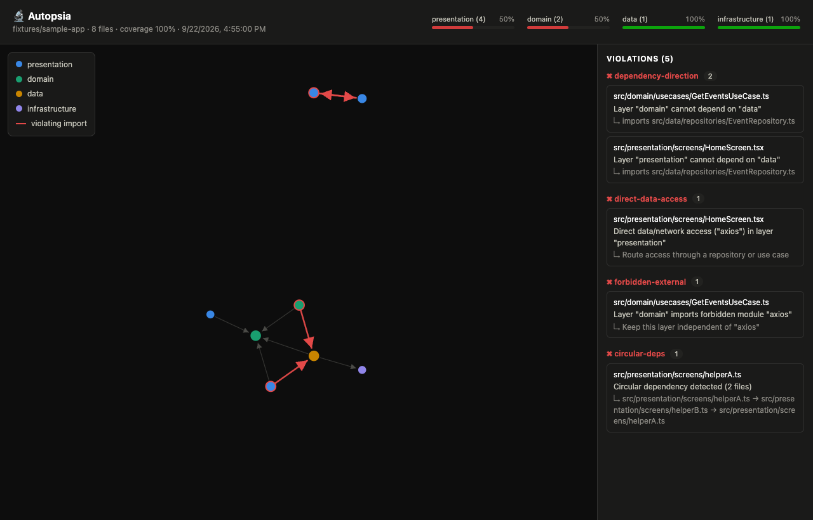

CLI · REACT NATIVE · TYPESCRIPT · v0.5.0
Stop new architecture violations.
Adopt dependency rules in React Native / TypeScript without fixing all your legacy debt first.
1. Understand your dependencies
Generate and review your config. Explore a visual report that works offline.
npx autopsia-rn@0.5.0 init npx autopsia-rn@0.5.0 scan . --html --open
2. Block new errors
Record existing debt once. CI fails on new errors or incomplete strict analysis.
npx autopsia-rn@0.5.0 scan . --update-baseline npx autopsia-rn@0.5.0 scan . --ci
Visible dependencies. Reproducible results.
Eight files, five intentional violations. Break one cycle: four violations and zero new ones. Reproduce the example →

Clear rules, explicit scope
Layer direction, forbidden external modules, data-client imports and cycles. Configure severity and exceptions. Autopsia checks configured dependencies; it does not certify your whole architecture. Type-only imports are excluded from rules, and global fetch() calls are not detected.
English by default; --lang es for Spanish terminal and HTML output. Compatible with 0.4 version-1 baselines.